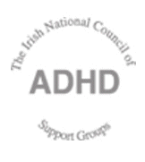

A caring pioneer in the area of learning difficulty
Obituary taken from: The Irish Times. Saturday, September 10th, 2005.
Dr Deirdre Killelea, who died peacefully, last month after a 10-year battle with cancer, was a pioneer in the area of learning difficulties who had a huge impact in Ireland and abroad.
She was born in Jersey City, New Jersey, US, on May 21st, 1948, of an irish father and polish mother. She qualified as an educational psychologist from the Catholic University of America, Washington DC. Dr Killelea worked as an educational psychologist for Fairfax County public schools in Fairfax, Virginia, and also lectured at George Mason University, Fairfax. From 1991-1993, she was programme manager at the Keller day treatment centre for children and adolescents of Fairfax County suffering from various learning disabilities such as dyslexia and ADHD (Attention Deficit Hyperactivity Disorder).
She came to Ireland in 1994, and worked as a clinical psychologist in the department of child psychiatry at the Midwestern Health Board. She co-ordinated the research project which led to the publication of an Oireachtas report on ADHD in the sprig of 1998. She helped set up the Irish national council of ADHD support groups, comprised of 15 groups, in 1999. Unquestionably her greatest impact was in the field of ADHD.
All those she helped were struck by her expertise and experience. She responded to patients and parents with compassion and sensitivity. She picked up the people that others had disregarded; she had an ability to see the hidden good in everyone no matter who they were or where they came from.
Speaking at her funeral service in Limerick before her cremation in Dublin on August 12th, 2005, Marion Bridgeman, a parent who had benefited form Dr Killelea's support said: "Deirdre's knowledge we would not have known how our children would or could shine. Through her we learned what could be done for vunerable children and adults...If you were lucky enough to have had contact with Deirdre she made sure you had a light of hope at the end of the tunnel. "She put you into a support network, and there you were helped and encouraged to grow, and to give back to others...It will be near impossible to replace Deirdre as a friend and a visionary of hope for such children and their parents across the four corners of Ireland..."
Dr Killelea appeared on The Late Late Show in March 2001, and was featured on a TV3 documentary in July that year. Even though her stay in Ireland was relatively short her impact was immense. She was loyal to those in her care, and no task was too great, no burden too heavy when it came to helping her patients and their parents. She enriched the lives of many, and she was herself enriched by their company. She gave and she received, and there was never a hint of patronage in her dealings with people.
Her devotion to her work and the people she cared for was remarkable considering her poor health in recent years. Her battle with cancer was a titanic struggle, a cloud that hung over her for the best part of 10 years. A huge burden of sickness, and its consequent accompaniment of loneliness and uncertainty, were borne with remarkable courage and fortitude. Twice she defeated cancer, and went about her work during those stressful times. In the end, after a long and brave battle, her body could take no more. The dignity with which she carried her final illness made a huge impression on all who accompanied her on her final journey. She will be missed but her memory will continue to inspire all those who reach out to help fellow human beings, and especially those who worked in the field of ADHD.
Dr Killelea is survived by daughter Courtney. Even though she lived most of her life in the US, she asked that her ashes repose in a favourite Co Clare lake.
Dr Deirdre Killelea, born May 21st, 1948; died August 10th, 2005.
